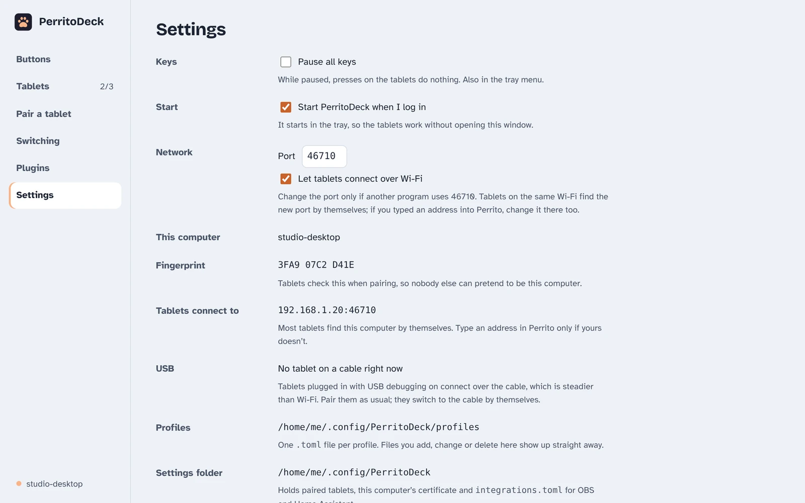

Troubleshooting and FAQ
Something not working? Start with the heading that matches what you see.
The tablet can't find the computer
If your computer doesn't appear under Found on this network in Perrito, or the tablet keeps saying Reconnecting…, go through these in order.

- Is PerritoDeck running? Look for the paw icon in the tray or menu bar. Closing the window is fine, but Quit PerritoDeck stops it.
- Are both on the same network? The tablet and the computer must be on the same Wi-Fi (a computer plugged into the same router by cable is fine). Guest networks, and some mesh and office networks, keep devices apart on purpose; that stops PerritoDeck too.
- Is the firewall letting PerritoDeck in? See below.
- Type the address instead. Some routers block the way devices find each other automatically. In PerritoDeck, open Settings and look under Tablets connect to for an address like
192.168.1.20:46710. In Perrito, tap Pair with a code and type that address. - Is Wi-Fi turned off in PerritoDeck? In Settings, Let tablets connect over Wi-Fi must be ticked, or only tablets on a USB cable can connect.
Firewall
PerritoDeck listens for tablets on port 46710. Your firewall has to allow it on your home network.
- Windows: the first time PerritoDeck starts, Windows asks whether to allow it; choose private networks. If you clicked Cancel, open Windows Security → Firewall & network protection → Allow an app through firewall, click Change settings, and tick Private next to PerritoDeck. Also check that Windows treats your home Wi-Fi as a private network, not a public one.
- Mac: if the macOS firewall is on, open System Settings → Network → Firewall → Options and make sure PerritoDeck is set to allow incoming connections.
- Linux: most desktops have no firewall switched on. If yours does, allow TCP port 46710, and UDP port 5353 so tablets can find the computer by themselves. With
ufw:sudo ufw allow 46710/tcpandsudo ufw allow 5353/udp.
Technical details
The computer advertises itself on the local network with mDNS (Bonjour) as _perritodeck._tcp, which uses multicast on UDP port 5353. Networks with "client isolation", "AP isolation" or multicast filtering block this; typing the address always works as long as TCP 46710 can get through. All connections are encrypted (TLS), and the tablet checks the computer's certificate fingerprint every time.
If another program already uses port 46710, choose a different Port in Settings, click Save network settings and then Restart now. Tablets that found the computer by themselves follow; if you typed an address into Perrito, change it there too.
The tablet only works with the cable
A tablet on a USB cable connects even when Wi-Fi can't get through, so the cable can hide a firewall problem until you unplug it. PerritoDeck shows a note on the Tablets and Pair a tablet pages when:
- a tablet tried Wi-Fi, got no answer at all and came over the cable instead, or
- on Windows, the firewall has no rule letting PerritoDeck take connections on the network you're on. This is common on a network Windows calls public: there, the first-run question's default answer lets nothing in.
The note says what to change; the steps are the same as under Firewall. On Windows you can either tick PerritoDeck for the kind of network you're on (Public or Private), or, at home, make the network private: Settings → Network & internet → Wi-Fi or Ethernet → your network → Network profile type → Private. The note goes away by itself once Wi-Fi works: while it's on the cable, Perrito tries the computer's Wi-Fi address again every 30 seconds. If you only ever use the cable, untick Let tablets connect over Wi-Fi in Settings instead, click Save network settings, then Restart now.
Technical details
A firewall usually drops a blocked connection without answering, so the tablet's connection times out. A refusal means the address has no PerritoDeck listening, so that doesn't count. Windows Firewall also drops connections while PerritoDeck isn't running, so once the tablet gets in over the cable it tries the Wi-Fi address once more before saying anything. If that still times out, it tells the computer in its hello (networkFailed). On Windows, PerritoDeck reads the firewall's rules (it never changes them): an enabled inbound rule for its program, or for TCP port 46710, on the network types in use.
"PerritoDeck couldn't start"
Only one PerritoDeck can run on a computer at a time, because they'd all want the same port. If you see this message, another copy is already running, perhaps the command-line version in a terminal. Quit it and open PerritoDeck again. The message also shows the exact error, which helps if it's something else.
Pairing problems
- "This code has expired." on the computer, or "That code is wrong or has expired" on the tablet
Pairing codes work for 5 minutes and only once. Click New code. A code also stops working after 5 wrong tries, to stop anyone guessing it.
- The fingerprints don't match.
Tap It doesn't match. Make sure you're pairing with the right computer (check its name). If you typed an address, check it's the one shown in PerritoDeck's Settings. If they still don't match, something on your network may be pretending to be your computer, so don't pair on that network.
- "Couldn't reach" your computer.
The tablet can't get through to the computer. See The tablet can't find the computer.
- "This computer no longer recognises this tablet. Pair it again."
The tablet was unpaired on the computer, or PerritoDeck's settings were reset. In Perrito, tap Forget next to the computer and pair again.
- "This isn't the computer you paired with."
The computer's identity changed. That's expected if you reinstalled PerritoDeck with fresh settings or moved to a new computer: tap Forget in Perrito and pair again. If you didn't change anything, be careful: it may not be your computer.
USB problems
Look at the USB line in PerritoDeck's Settings:
- Not set up: PerritoDeck can't find Android's
adbprogram. Install Android's platform-tools, then quit and reopen PerritoDeck. If you put platform-tools somewhere unusual, add that folder to yourPATH. - No tablet connected yet, with a reason underneath: adb sees a tablet but can't use it yet. Do what the reason says, most often tapping Allow on the tablet's "Allow USB debugging?" prompt, or unplugging the cable and plugging it back in.
- No tablet on a cable right now: PerritoDeck has
adbbut sees no tablet. Check that USB debugging is on, that you tapped Allow on the tablet's "Allow USB debugging?" prompt, and that the cable carries data (some cables only charge). On Windows, Fire tablets may need Amazon's USB driver.
Technical details
Run adb devices in a terminal. A tablet listed as device is ready; unauthorized means the prompt on the tablet hasn't been accepted yet. PerritoDeck runs adb reverse tcp:46710 tcp:46710 for each ready tablet; the tablet then reaches the computer at 127.0.0.1.
Buttons do nothing
Keys are paused
If PerritoDeck shows Keys are paused. at the top of its window, presses on the tablets are ignored on purpose. Click Resume, or untick Pause keys in the tray menu, or Pause all keys in Settings. Pausing is handy when you're cleaning the screen or a cat walks across it.
Hotkeys and typing don't work on a Mac
macOS only lets apps press keys for you after you allow it. PerritoDeck shows Hotkeys and typing need your permission. until you do. Click Open System Settings, go to Privacy & Security → Accessibility, and turn on PerritoDeck. If it's already on but hotkeys still don't work (this can happen after an update), turn it off and on again.
A hotkey goes to the wrong app
Hotkeys and typed text go to whichever window is in front on the computer, just as if you'd pressed the keys yourself. Click into the right app first. Some apps also have global shortcuts that work from anywhere; those are the best ones to put on a button.
Hotkeys don't reach an app running as administrator (Windows)
Windows doesn't let a normal program press keys in an app that runs as administrator: Task Manager, an admin terminal, or OBS started with Run as administrator (which some people do for game capture). The keys are dropped without any error, so the button seems to do nothing. Start that app normally if you can. Otherwise, OBS buttons that use the OBS connection instead of hotkeys still work, because they don't press keys. Running PerritoDeck itself as administrator also works, but isn't recommended.
The button flashes ⚠
The action ran into a problem. Common causes: OBS or Home Assistant isn't set up or isn't running, a plugin isn't running, or a program can't be found. Click the button on the Buttons page and use Try it: PerritoDeck shows the full message. If it says integrations.toml has a mistake, so OBS is off, or the same for Home Assistant, the rest of the message says what's wrong and which line it's on. A mistake in the file turns them all off until you fix it and restart PerritoDeck. For plugins, check their status on the Plugins page. Try it isn't there for page, Switch profile, slider and Stream Deck plugin keys; for a Switch profile key, check that its profile and page still exist (the editor marks missing ones (not there)).
Linux notes
Wayland desktops
Most current Linux desktops (GNOME and KDE Plasma, for example) use Wayland, which is built to stop apps from watching or controlling each other. That's good for security but limits PerritoDeck in two ways:
- Hotkeys and typing: each time PerritoDeck starts, your desktop asks whether it may control your keyboard ("remote desktop" or "input" permission). Allow it, or hotkey and typing buttons won't work until the next start.
- Switching profiles by app isn't available. Wayland has no standard way for an app to ask which window is in front, so the Switching page says it isn't available here. Coming Support for specific desktops is planned. Choosing a profile per tablet on the Tablets page still works.
On an X11 session, both work without asking.
No tray icon on GNOME
GNOME doesn't show tray icons unless you install the "AppIndicator and KStatusNotifierItem Support" extension. PerritoDeck runs fine without it; you just can't reach its tray menu. Open PerritoDeck again from your app list to bring the window back.
Where settings live
PerritoDeck keeps everything in one folder for your user account. The quickest way there is Settings → Settings folder → Open folder, which also shows the exact path.
| System | Settings folder |
|---|---|
| Windows | %APPDATA%\perritodeck\PerritoDeck\config |
| macOS | ~/Library/Application Support/dev.perritodeck.PerritoDeck |
| Linux | ~/.config/perritodeck (or $XDG_CONFIG_HOME/perritodeck) |
Inside it:
| File or folder | What it holds |
|---|---|
profiles/ | Your profiles, one .toml file each, plus icons/ for images you picked |
integrations.toml | OBS, Home Assistant and Companion settings, including passwords |
devices.json | Paired tablets |
host-cert.der, host-key.der | This computer's identity (its fingerprint comes from these) |
app-settings.json | The app's own settings, such as the port and switching rules |
plugins/, plugin-settings/ | Installed plugins and their settings |
plugin-data/ | What plugins keep between runs, such as timers and counts |
bin/ | The copy of perritodeck-mcp that AI assistants start |
sdplugins/ | Plugins made for the Elgato Stream Deck |
logs/ | Log files (see Getting help and logs) |
mcp-token | The access token for AI assistants, readable only by you |
To back up your setup, copy the whole folder while PerritoDeck isn't running. To share just a layout, export a profile instead.
To start over, quit PerritoDeck and delete the folder. You'll then need to pair your tablets again.
Getting help and logs
When you report a problem, two buttons in Settings → Getting help save a lot of back and forth:
- Copy diagnostics copies a short report to paste into a bug report: the versions of PerritoDeck and your system, where files are kept, your tablets, plugins and their state, which integrations are set up, network and AI assistant settings, and the last 200 lines of the log. It leaves out keys, certificates, tokens and passwords.
- Open logs folder shows the log files. They're in the
logsfolder inside the settings folder:perritodeck.logis the newest, and older ones are numbered. A new file starts each day; PerritoDeck keeps seven, about 10 MB at most.
To capture more detail while you reproduce a problem, tick Detailed logs in the same place. It takes effect straight away; untick it afterwards, as it writes a lot.
Plugins' error messages go to the same log, marked with the plugin's id.
Technical details
With the command-line host, perritodeck-host diagnostics prints the same report (it reads the files, so it doesn't know which tablets are connected right now), and perritodeck-host paths prints where every file is, the logs included. The log also goes to the terminal. RUST_LOG still works for finer control, for example RUST_LOG=debug. Tokens, passwords and similar values are replaced with [redacted] before anything is written.
Questions
- Does PerritoDeck collect any data?
No. Neither app has analytics, ads, crash reporting or accounts, and neither sends anything to us. The tablet talks only to your computer. Your computer only goes online when you ask it to: Look online for plugins, the optional update check (off unless you tick Tell me when a new version is out), and the services your own buttons and plugins use. The full privacy policy is short.
- Is it safe? Could someone else on my Wi-Fi press my buttons?
Only tablets you've paired can connect, and pairing needs the code shown on your computer's screen. Each tablet gets its own secret key, the connection is encrypted, and web pages in your browser can't connect to PerritoDeck. To remove a tablet, use Unpair… on the Tablets page; it's disconnected straight away.
- Do I need the tablet and computer on the internet?
No. They only need to reach each other, over your Wi-Fi or a USB cable.
- Can I use a phone instead of a tablet?
Yes. Perrito works on Android phones too; a phone just fits fewer buttons.
- Can I edit buttons on the tablet?
Not yet. Buttons are edited on the computer, and changes appear on the tablet straight away.
- Does it work with an Elgato Stream Deck?
PerritoDeck can run many plugins made for the Elgato Stream Deck. Using Stream Deck hardware itself as a PerritoDeck panel isn't supported. PerritoDeck isn't affiliated with Elgato or Corsair.
- Is there an iPhone or iPad version?
It's coming. The app is written but hasn't been built and tested yet.
- Can an AI assistant use PerritoDeck?
Yes, if you allow it. See AI assistants.
- Where do I report a bug or a security problem?
Bugs and ideas go to the project on GitHub; paste the diagnostics into the report. Please report security problems privately with GitHub's "Report a vulnerability" button rather than in a public issue.